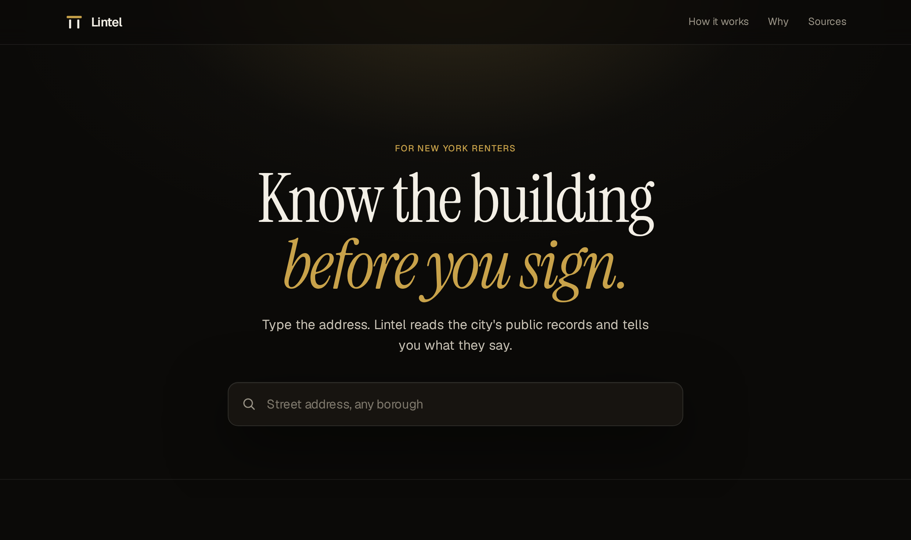
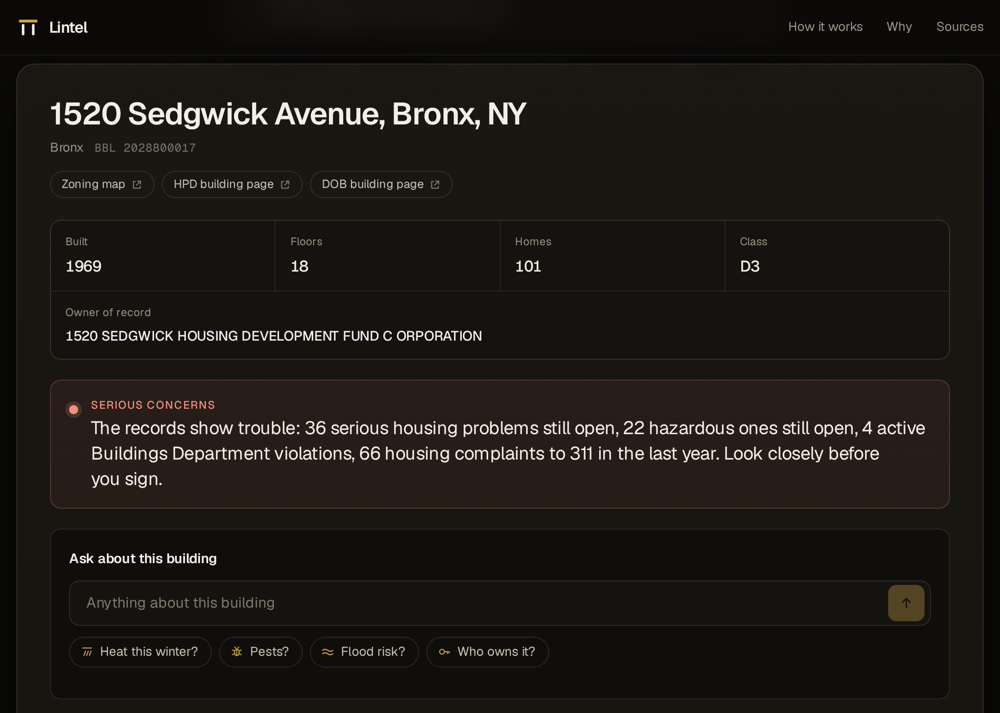
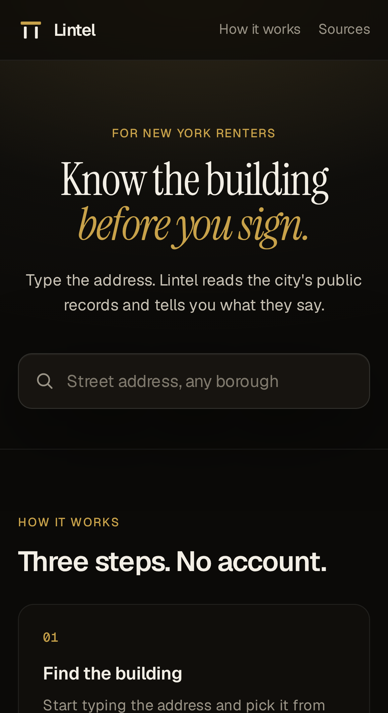
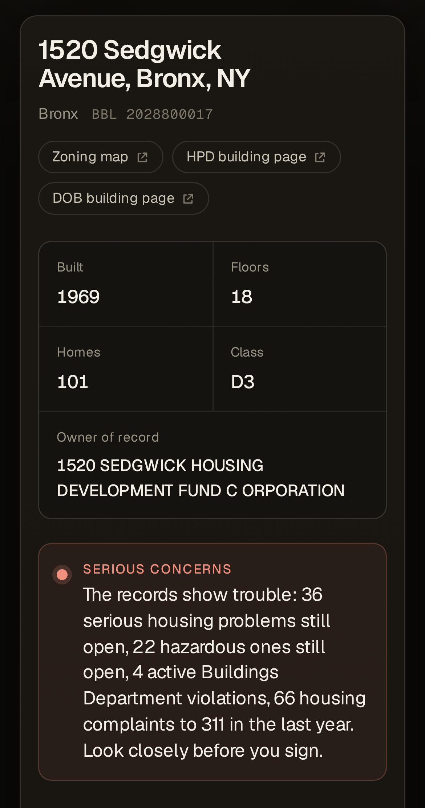
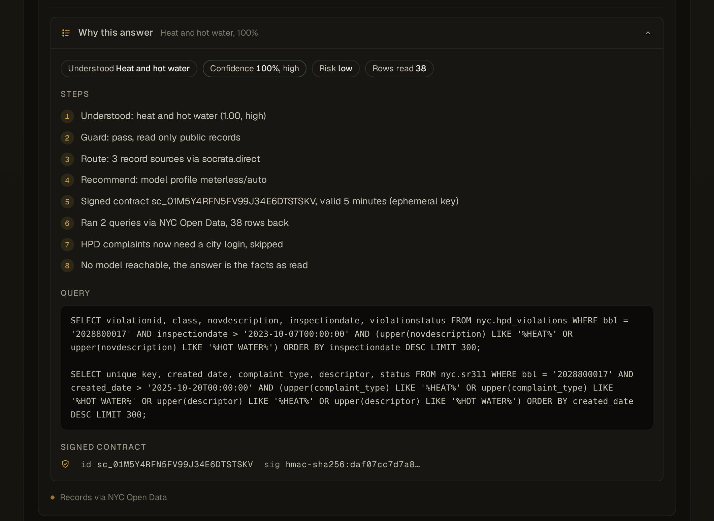
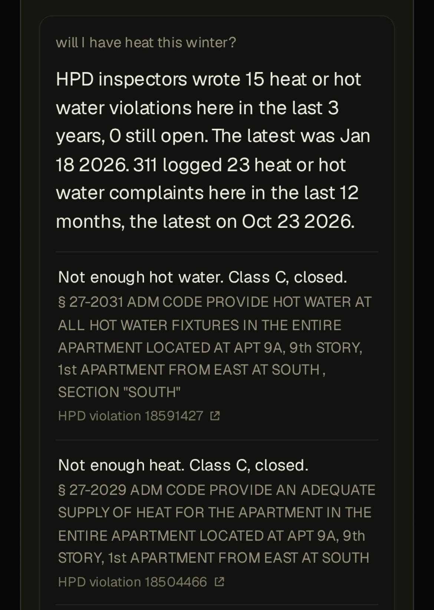

Know the building
before you sign.
An agent that answers a renter's question about one New York building from city records, and shows exactly why.






Nightshift writes the answer when connected. Otherwise deterministic rules do, and the answer names which one ran.
Try it at lintel-why.vercel.app
Type 1520 Sedgwick Avenue, Bronx. Ask: will I have heat this winter?